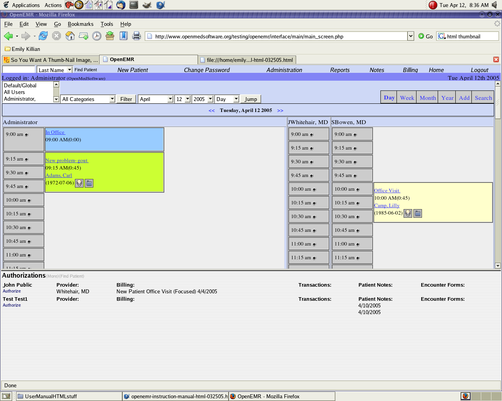

PATIENT ENCOUNTERS
Entering a new encounter from the appointment scheduler
From the main screen, patient appointments are listed in boxes. Each scheduled appointment has a button that looks like an arrow that is pointing downward.
Clicking that button will take you to the new patient encounter form, where the patient's reason for being seen can be entered in the input box.
Once that is typed, click to save.
Please click on the following thumbnails for more detailed pictures.


Entering a new encounter from the patient's summary screen
Click on encounter located at the top of the page.
Click on new patient encounter and type the patient's reason for being seen in the input box.
Once that is typed, click save.
Please click on the following thumbnail for a more detailed picture.
Entering vital signs
Once the new patient encounter form is finished, click on vital signs from the menu on the right rail.
Type in the patient's vital signs in the appropriate input boxes and click save.
Please click on the following thumbnail for a more detailed picture.

Entering additional patient notes
For patient phone calls and refills, bring up the patient's summary page.
Click on patient notes, located on the right rail, and enter the note in the input box.
Click add new note.
To view only active or inactive notes, click on your viewing preference under the input box.
Back Index Next
{kind=link}